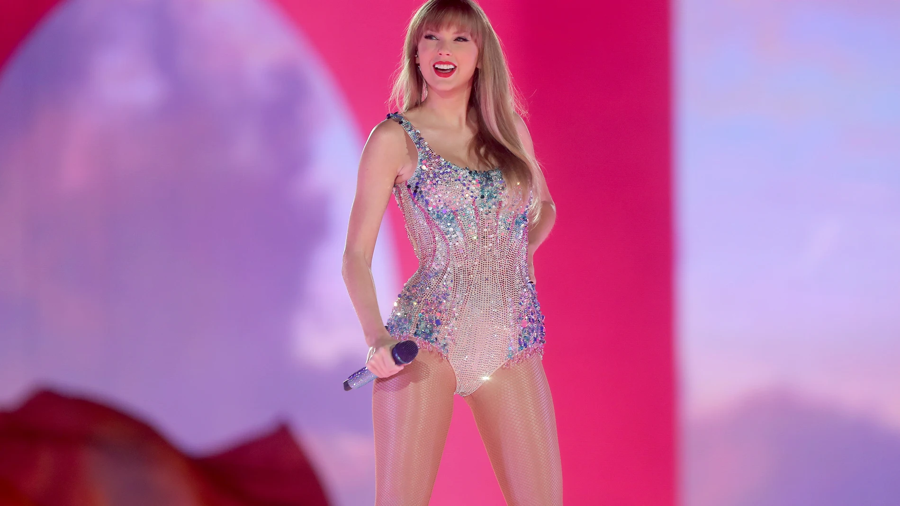

Taylor Swift nació en Pensilvania, Estados Unidos, el 13 de diciembre de 1989. Su padre, Scott Swift, es corredor de bolsa y su madre Andrea, ama de casa. Tiene también un hermano menor llamado Austin. Desde muy pequeña comenzó a demostrar interés no solo hacia la música, sino también por escribir. Se sabe que a los cinco años ya escribía canciones y también era muy entusiasta al cantar en karaokes y en las ferias que se presentaban en su ciudad de origen. Cuando iba en cuarto grado, fue premiada en un concurso de poesía por el poema que presentó, titulado «Monstruo en mi armario». Durante uno de los veranos de su infancia, escribió también una novela de más de 300 páginas, la cual hasta la fecha no ha sido publicada. Cuando tenía doce años, se tomó más en serio la composición de canciones, colaborando junto a algunos compositores cercanos a la zona en donde vivía. Más tarde su familia se trasladó a las afueras de Nashville y ella se anotó en un concurso llevado a cabo en e»The Bluebird Café». Fue en ese lugar donde llamó la atención del productor musical, Scott Borchetta, quien le hizo el ofrecimiento de un contrato con el sello discográfico Big Machine Records. Taylor se convirtió así en la compositora más joven contratada por la empresa. En ese entonces, su carrera musical estaba a punto de despegar.
